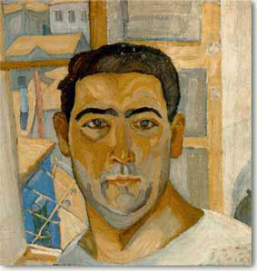

| Παπαλουκάς Σπύρος (1892-1957)  Γεννήθηκε το 1892 στη Δεσφίνα Φωκίδας. Ενδιαφέρθηκε για την αγιογραφία, καθιερώθηκε ωστόσο κυρίως μέσα από τα τοπία του, που αποπνέουν γαλήνη και ηρεμία. Επηρεάσθηκε από τη μελέτη της βυζαντινής τέχνης και σε ηλικία μόλις 25 ετών (1927) ανέλαβε την αγιογράφηση της Μητρόπολης της ¶μφισσας την οποία ολοκλήρωσε το 1932, παραδίδοντας στην ¶μφισσα ένα μοναδικής αξίας καλλιτεχνικό έργο. Για την αγιογράφηση του ναού χρησιμοποίησε "ανθίβολα", σχεδίασε δηλαδή και την παραμικρή παράσταση σε χαρτί, σε κλίμακα1:1, τρύπησε το περίγραμμα του σχεδίου, τοποθέτησε το τρυπημένο χαρτί ("ανθίβολον") στον τοίχο της εκκλησίας, και με την χρήση κάρβουνου αποτύπωσε στον τοίχο του ναού την παράσταση που είχε με ιδιαίτερο ύφος ζωγραφίσει στο χαρτί. Θεωρείται ένας από τους εκπροσώπους του ιμπρεσιονισμού στην Ελλάδα, κυρίως για τον τρόπο που χρησιμοποιεί τα χρώματα. Η φύση, οι φιγούρες ξεφεύγουν από τη στεγνή ρεαλιστική αναπαράσταση και αποκτούν μια ποιητική διάσταση. Ο Σπύρος Παπαλουκάς διέγραψε μία εξαιρετική καλλιτεχνική πορεία, διετέλεσε καθηγητής της Ανωτάτης Σχολής Καλών Τεχνών και αναγνωρίστηκε ως ένας από τους κορυφαίους νεοέλληνες ζωγράφους. Έργα του Σπύρου Παπαλουκά «Αγόρι με τιράντες» «Καμένο χωριό» |
||